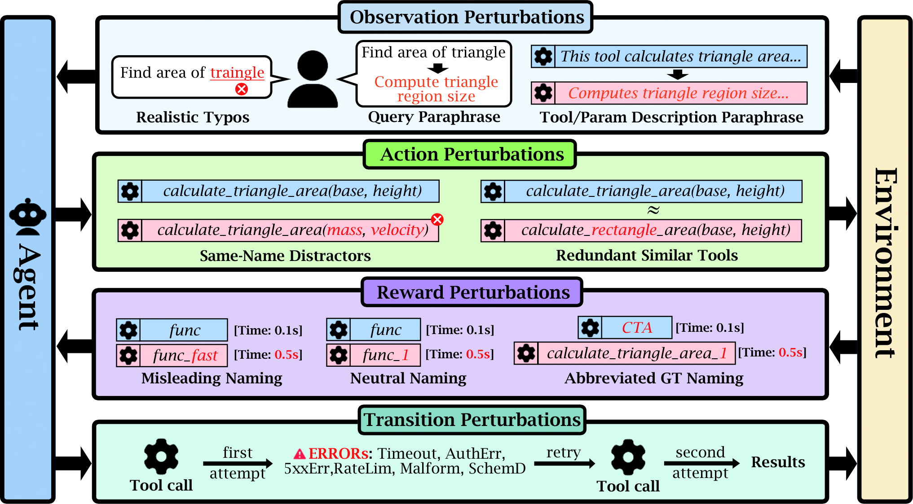

When Simulation Lies: A Sim-to-Real Benchmark and Domain-Randomized RL Recipe for Tool-Use Agents
arXiv preprint · Under review · 2026
RobustBench-TC evaluates tool-use agents under 22 types of disruption, while ToolRL-DR studies domain-randomized reinforcement learning for more reliable behavior.